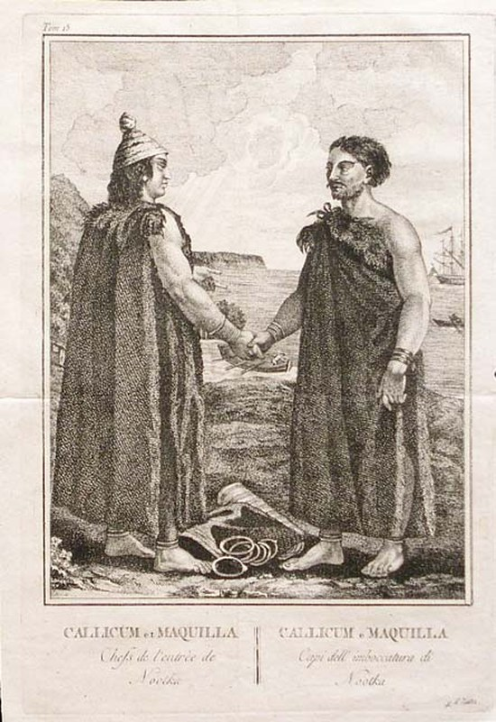

THE GIVEAWAY
Wounds are wealth — he takes his people's hurts onto himself and gives them onward as gifts, and every gift increases his standing.

THE GIVEAWAY
Wounds are wealth — he takes his people's hurts onto himself and gives them onward as gifts, and every gift increases his standing.
Feature map
Level-by-level features, as the figure refined them.
I Give This Wound
Reaction · 2 CE.
Tier IV · Support · Suggested CE ability: CHA · Primary verb: Give. Wounds are wealth. He takes his people's hurts onto himself and gives them onward among the willing — never forced; a gift compelled is theft, and Heaven knows the difference. Standing. Each time Maquinna takes or redistributes damage through his technique, he gains 1 Standing (maximum = proficiency bonus). He may spend Standing when he deals damage or restores HP with a technique feature: +1 per point spent to the damage or healing roll. If a feature states its own Standing gain, use that instead of the general gain above. The more he gives, the greater his standing.
When a willing creature within 60 ft takes damage, Maquinna takes up to half of it (round up) onto himself instead — decided after seeing the roll. He gains 1 Standing. (The chief bleeds first. That was always the price of the name.)
The Giver's Eye
passive
A giver knows what is needed: Maquinna always knows the current and maximum HP of willing creatures within 60 ft.
Name the Gift
Bonus action · 2 CE.
Maquinna gives a willing creature within 60 ft temporary HP equal to his CHA modifier + proficiency bonus — and names the gift aloud: "I give you shelter." "I give you breath." The naming is not flavor. Heaven hears it.
The Flow Cannot Stop
passive
Heaven audits the flow: Maquinna cannot gain temporary HP from any source except his own technique — what would be kept must instead be given.
Copper's Logic
Action · 4 CE.
Maquinna names gifts: restore a total of 4d8 + CHA modifier HP, divided as he chooses among willing creatures within 60 ft — each share named aloud. If he carries a fragment of the Broken Copper (Latent Asset 21), add his proficiency bonus to the total.
The Great Giveaway
Action · 7 CE · 1 minute.
For the duration, when a willing creature within 60 ft takes damage, Maquinna may take any portion of it onto himself — decided after the roll, no reaction required — and gains 1 Standing per 10 damage taken this way (round down). The giving, at full flood.
Maximum, Domain, or equivalent.
Capstone material.
Maximum: THE BOSTON'S CARGO
He gives everything at once: every willing creature within 120 ft regains 6d8 + CHA modifier HP, each healing named as a gift — and Maquinna takes 2d8 force damage per creature healed, the giver's own bleeding, willingly borne. He then gains Standing equal to the number of creatures healed.
THE HOUSE OF GIFTS
The potlatch house, perfected — every gift named, every wound accounted. Sure-hit (allies): whenever a willing creature in the Domain takes damage, half of it (round down) flows to Maquinna as a gift instead — he takes it, in full; the gift is received before it is given. He may immediately give it onward as healing to another willing creature in the Domain (1:1, no action): healing given this way can never exceed the damage he actually took that round, and the taken damage is not reduced by the giving. (Transfer and conversion, accounted — never both at full value.) Sure-hit (enemies): a hostile creature that deals damage to a willing creature inside is priced — it takes psychic damage equal to half the damage it dealt before any redirection (round down). Willing-decline: on its turn, it may instead stop — taking no hostile action against the Domain's guests for 1 round — and owe nothing while stopped.
- Clash points
- 800
- Burnout
- 5 rounds
- Duration
- 2 minutes
- Radius
- 60-ft radius
- Activation ✦
- full-turn action
- CE cost ✦
- 20
✦ Canon: figure Domains are Specific Domains — the stated profile governs, not the player point-unlock table.
THE NAME GROWS
Once per long rest, Maquinna makes the great giving: he distributes his own HP among willing creatures within 120 ft as healing — up to half his current HP, minimum 1 per recipient, shares chosen freely and named aloud. For 24 hours afterward, he has advantage on all Charisma checks and his Standing maximum doubles. That night, his name is spoken in every potlatch on the coast.
Build-defining options.
Historical-figure techniques grant no feats — the figure's art is complete as written, and the builder's feat picker excludes these techniques. Take the progression as the build.
Edge cases and shared systems.
Campaign canon notes